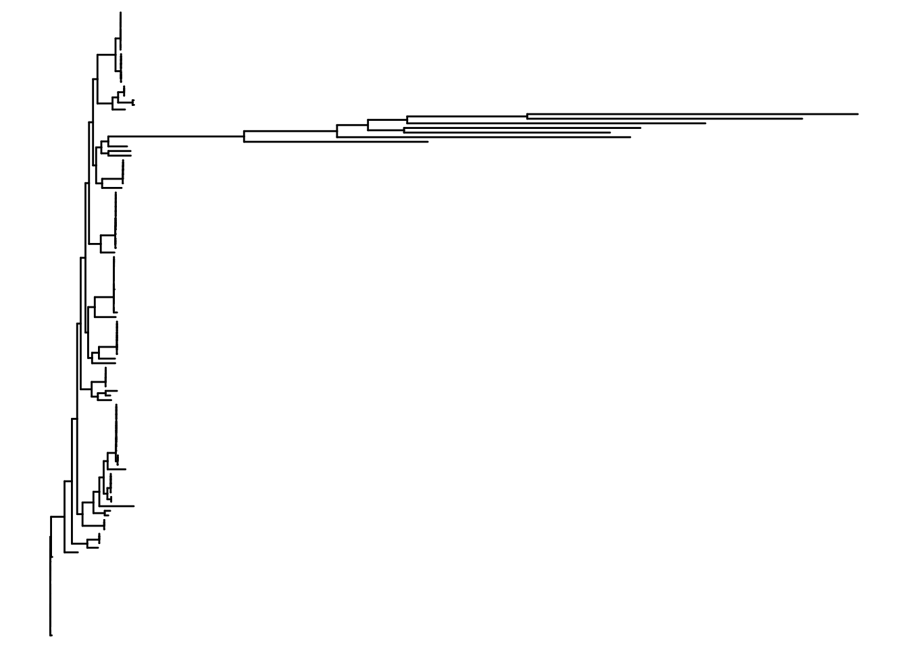

Chapter 4 Tree object handling
Trees exist as objects of various forms in R before they are printed to a visual form. These objects allow us to modify tree data in different ways to enrich and improve visualization.
4.1 phylo objects
Trees are initially imported from Newick files by read.newick as phylo
objects. These are simple objects which outline tree nodes, edges, and
their labels making them easily accessible.
## [1] "phylo"##
## Phylogenetic tree with 136 tips and 134 internal nodes.
##
## Tip labels:
## GCA_033376255.1, GCA_032917875.1, GCA_030521005.1, GCA_030520985.1, GCA_030521045.1, GCA_030521015.1, ...
## Node labels:
## , 0.997758, 0.942927, 1.000000, 0.904709, 1.000000, ...
##
## Unrooted; includes branch length(s).You can find the following information in a tree object
## [1] "edge" "edge.length" "Nnode" "node.label" "tip.label"tip.label has the leaf names.
## [1] "GCA_033376255.1" "GCA_032917875.1" "GCA_030521005.1" "GCA_030520985.1"
## [5] "GCA_030521045.1" "GCA_030521015.1"node.label has the tags in the nodes from the Newick file. In the case of RAxML outputs, these tags are the bootstrap support values.
## [1] "" "0.997758" "0.942927" "1.000000" "0.904709" "1.000000"edge links leaves and inner nodes to build the tree.
## [,1] [,2]
## [1,] 137 138
## [2,] 138 1
## [3,] 138 2
## [4,] 137 139
## [5,] 139 140
## [6,] 140 141edge.length holds the lengths of the edges according to the phylogenetic
calculations from RAxML. The edges are counted starting from the number
of leaves + 1.
## [1] 0.000005 0.000205 0.000004 0.000001 0.000010 0.000001The advantage of the phylo object is that its contents are easy to
modify:
tree0a<-tree0
xtip<-which(tree0a$tip.label=="GCF_021952865.1")
tree0a$tip.label[xtip]="changed"
plot(tree0a)
4.2 tibbles and tidytree objects
The downside of phylo objects is that they are not easy to enrich with
needed annotations. A good way to cover this is tidytree objects, which
seamlessly merge all data and make them easily accessible for routines
downstream. tidytree objects, though, are S4 objects which have more
rigid encapsulation.
Building tidytree objects from phylo objects can become cumbersome
using regular data manipulation routines. Fortunately, tibble functions
make this construction much easier.
## [1] "tbl_tree" "tbl_df" "tbl" "data.frame"## # A tbl_tree abstraction: 270 × 4
## # which can be converted to treedata or phylo
## # via as.treedata or as.phylo
## parent node branch.length label
## <int> <int> <dbl> <chr>
## 1 138 1 0.000205 GCA_033376255.1
## 2 138 2 0.000004 GCA_032917875.1
## 3 142 3 0.000002 GCA_030521005.1
## 4 142 4 0.000002 GCA_030520985.1
## 5 141 5 0.000008 GCA_030521045.1
## 6 140 6 0.000012 GCA_030521015.1
## 7 145 7 0.00185 GCA_044004465.1
## 8 147 8 0.00149 GCA_044029445.1
## 9 148 9 0.000001 GCA_030521115.1
## 10 149 10 0.000001 GCA_030521105.1
## # ℹ 260 more rowsThis makes it easy to add metadata. We will use some annotations as example. Remember that metadata labels must be in the same order as tip labels.
library(dplyr)
# Charge metadata and keep relevant columns
metadata <- readr::read_tsv("data/Experiment_Design_example_1.tsv")
metadata<-metadata %>% select(Assembly.Accession,Strain,
Location,Source,Organism)
#Reorder to match phylo tree object
metadata <- metadata %>%
filter(Assembly.Accession %in% tree0$tip.label) %>%
arrange(match(Assembly.Accession, tree0$tip.label))
print(head(metadata))## # A tibble: 6 × 5
## Assembly.Accession Strain Location Source Organism
## <chr> <chr> <chr> <chr> <chr>
## 1 GCA_033376255.1 MX10-E4 Mexico: Guanajuato <NA> Clavibacter michiganensi…
## 2 GCA_032917875.1 MX11-E8 Mexico: Guanajuato <NA> Clavibacter michiganensi…
## 3 GCA_030521005.1 C47 Israel <NA> Clavibacter michiganensis
## 4 GCA_030520985.1 C48 Israel <NA> Clavibacter michiganensis
## 5 GCA_030521045.1 C44 Israel <NA> Clavibacter michiganensis
## 6 GCA_030521015.1 C46 Israel <NA> Clavibacter michiganensis4.3 ggtree objects
ggplot2 produces graphs, and ggtree is built on top to specialize in plotting trees. However, to generate the plots ggplot2 creates objects
which specify plot properties. These objects can be handled in several
ways to create more detailed plots.
We creatte a ggtree plot object
## [1] "ggtree" "ggplot2::ggplot" "ggplot" "ggplot2::gg"
## [5] "S7_object" "gg"And plot it

ggplot’s added methods operate on the object
plo0<-plo +
geom_nodelab(color="black",breaks=NA) +
geom_tiplab(aes(label=label),fontface=2)
print(plo$layers) # original object## $stat_tree
## mapping: node = ~node, parent = ~parent, x = ~x, y = ~y
## geom_segment: lineend = round, na.rm = TRUE, arrow = NULL
## stat_tree_horizontal: layout = rectangular, lineend = round, na.rm = TRUE, rootnode = TRUE, continuous = none
## position_identity
##
## $stat_tree...2
## mapping: node = ~node, parent = ~parent, x = ~x, y = ~y
## geom_segment: lineend = round, na.rm = TRUE
## stat_tree_vertical: layout = rectangular, lineend = round, na.rm = TRUE, rootnode = TRUE, continuous = none
## position_identity## $stat_tree
## mapping: node = ~node, parent = ~parent, x = ~x, y = ~y
## geom_segment: lineend = round, na.rm = TRUE, arrow = NULL
## stat_tree_horizontal: layout = rectangular, lineend = round, na.rm = TRUE, rootnode = TRUE, continuous = none
## position_identity
##
## $stat_tree...2
## mapping: node = ~node, parent = ~parent, x = ~x, y = ~y
## geom_segment: lineend = round, na.rm = TRUE
## stat_tree_vertical: layout = rectangular, lineend = round, na.rm = TRUE, rootnode = TRUE, continuous = none
## position_identity
##
## $label_geom
## mapping: x = ~x + diff(range(x, na.rm = TRUE))/200, y = ~y, label = ~label, node = ~node, subset = ~!isTip
## geom_text_g_gtree: parse = FALSE, check_overlap = FALSE, na.rm = TRUE
## stat_tree_label: na.rm = TRUE
## position_nudge
##
## $label_geom...4
## mapping: x = ~x + diff(range(x, na.rm = TRUE))/200, y = ~y, label = ~label, node = ~node, subset = ~isTip
## geom_text_g_gtree: parse = FALSE, check_overlap = FALSE, na.rm = TRUE
## stat_tree_label: na.rm = TRUE
## position_nudgeAnother way is to use the cowplot library to print the plot as a grid of several objects. This comes useful to create complex plots and legends in
the cases in which ggplot makes this difficult.
Lets create a custom coloring scheme for our phylogeny
library(cowplot)
library(RColorBrewer)
metadata$Organism<-as.factor(metadata$Organism)
metadata$Source<-as.factor(metadata$Source)
colrs=c(brewer.pal(length(levels(metadata$Organism)),"Paired"),
"palegreen","chartreuse4")
names(colrs)=c(levels(metadata$Organism),levels(metadata$Source))
colrs## Clavibacter californiensis
## "#A6CEE3"
## Clavibacter capsici
## "#1F78B4"
## Clavibacter lycopersici
## "#B2DF8A"
## Clavibacter michiganensis
## "#33A02C"
## Clavibacter michiganensis subsp. michiganensis
## "#FB9A99"
## Clavibacter nebraskensis NCPPB 2581
## "#E31A1C"
## Clavibacter phaseoli
## "#FDBF6F"
## Clavibacter sepedonicus
## "#FF7F00"
## Clavibacter zhangzhiyongii
## "#CAB2D6"
## Reference
## "palegreen"
## <NA>
## "chartreuse4"Create a data frame for coloring
POR FAVOR AYÚDENME AQUÍ, NO LOGRO QUE ME SALGA ESTA RECETA DE FILOGENIA CON HEATMAPS!! El data frame annot cambió con respecto al código original que creo que es de D
plo1<-gheatmap(plo0,annot[,1,drop=F]) +
scale_color_manual(annot$Organism,values=colrs) +
theme(legend.position="right")
plo1
leg1=get_legend(plo1)
plo2=gheatmap(plo0,annot[,"Host",drop=F]) +
scale_color_manual("Host",values=colrs) +
theme(legend.position="right")
leg2=get_legend(plo2)
plo3=gheatmap(plo0,annot) +
scale_color_manual(values=colrs) +
theme(legend.position="none")
all_leg=plot_grid(NULL,leg1,leg2,NULL,nrow=1,ncol=4,
rel_widths=c(0.25,1,1,0.25))
plot_grid(plo3,all_leg,nrow=2,ncol=1,
rel_heights=c(1.3,0.15))